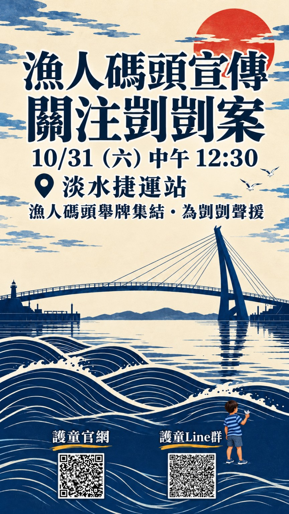
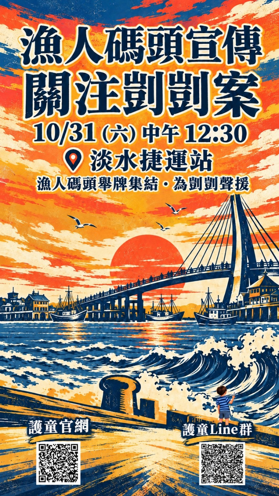
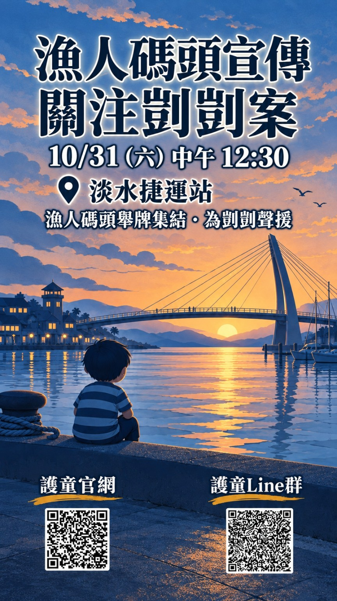
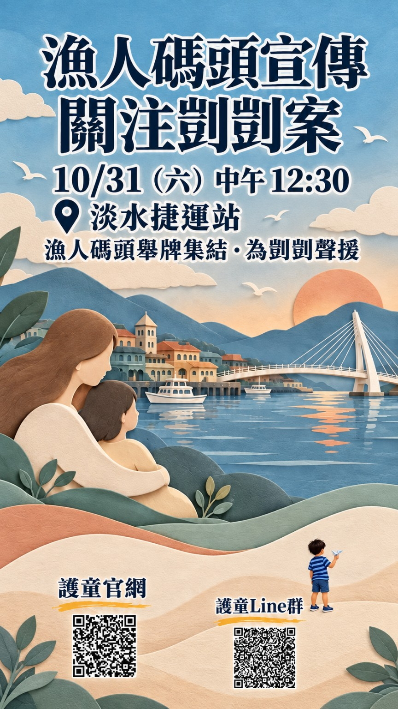
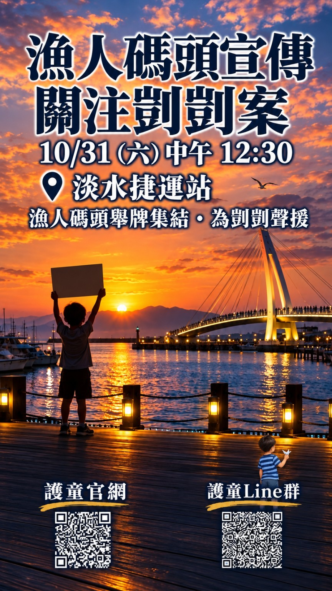
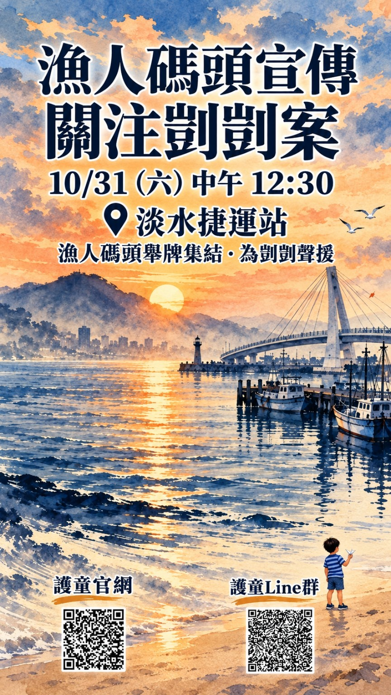
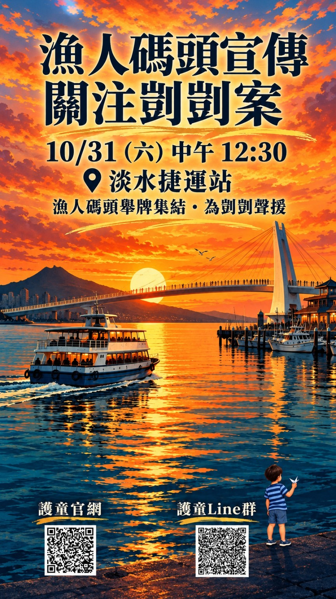
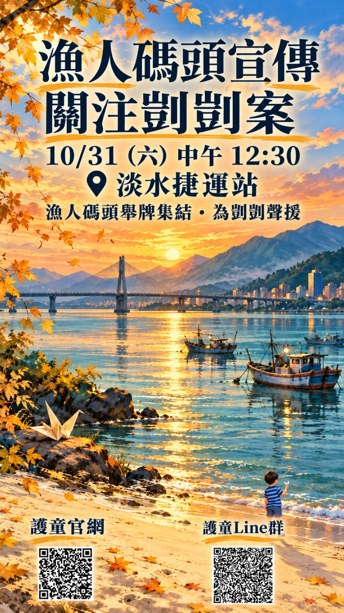
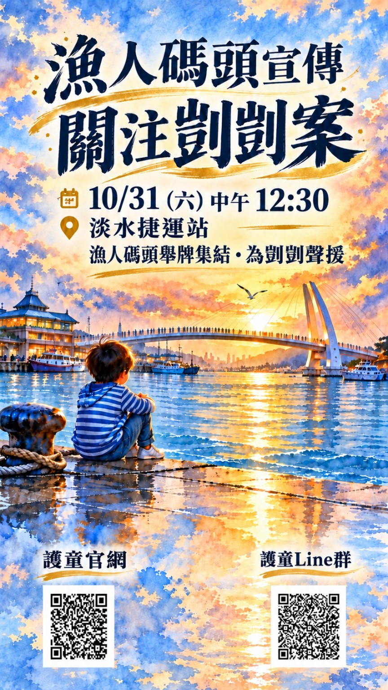
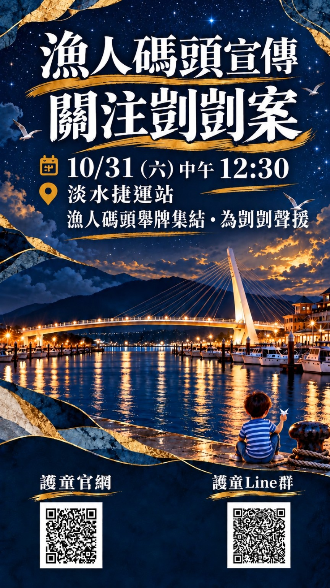

漁人碼頭｜凱凱事件を沈黙させない
10月31日（土）12:30、淡水MRT駅に集合。漁人碼頭でプラカードを掲げ、凱凱さんへの支援を届けます。
漁人碼頭｜凱凱事件を沈黙させない
一人の声は、もしかすると小さいかもしれません。
けれども、ともに立ち上がれば、力になります。
淡水漁人碼頭で、より多くの人に凱凱さんの名前を知ってもらい、子どものために声を上げ続ける人がいることを伝えます。
#凱凱事件を沈黙させない #私たちはここにいる
一緒に立ち上がり、凱凱さんを支える力になってください。❤️🙏
子どもの権利と制度改革に関心のある皆さまの参加をお待ちしています。淡水MRT駅から漁人碼頭へ移動し、平和的でわかりやすい公共の提言を行います。
プラカード啓発と集会を中心とした活動です。交通と現場の状況にご注意ください。
平和的かつ理性的に参加し、現場の秩序と他の方々を尊重してください。
移動・集合のご案内
団体での推奨移動｜紅26バス：12:30の集合後は、淡水MRT駅から「漁人碼頭」へ向かう紅26を優先して利用します。公式案内では、紅26は漁人碼頭と淡水MRT駅を結び、休日のオフピーク時はおよそ10～15分間隔です。出発前に大台北バスのリアルタイム情報をご確認ください。
集合に遅れた場合｜各自で向かう：淡水MRT駅から紅26に乗り、「漁人碼頭」で下車して活動エリアへお越しください。到着後は、このページのLINEコミュニティでチームの最新状況を確認してください。現地での正確な合流地点はチームから別途案内します。推測で探さないでください。
代替手段｜淡海ライトレール：紅26に臨時の影響がある場合は、淡水駅からMRTで紅樹林駅へ行き、淡海ライトレールに乗り換えて「淡水漁人碼頭駅」へ向かえます。乗り換えが必要なため、淡水での集合後の団体移動には第一候補ではありません。
出発前の確認と安全：10月26日時点で、10月31日の紅26または漁人碼頭周辺に関する専用の迂回・交通規制の告知は確認されていません。直前の事業者、警察、交通規制の案内に従ってください。早めに駅へ到着し、バスを追いかけたり車道をむやみに横断したりしないでください。同行者と離れず、天候、ホーム、港周辺の徒歩移動に注意してください。
児童保護行動連盟のLINEコミュニティに参加
公式サイトとLINEコミュニティへ直接アクセスできます。第三者の動的リダイレクトは使用しません。
LINEコミュニティに参加https://line.me/ti/g2/0P5NIUSmC4jRXC5aQrgIIfRywBptTBuyhyhmYg?utm_source=invitation&utm_medium=link_copy&utm_campaign=default
活動ポスター









